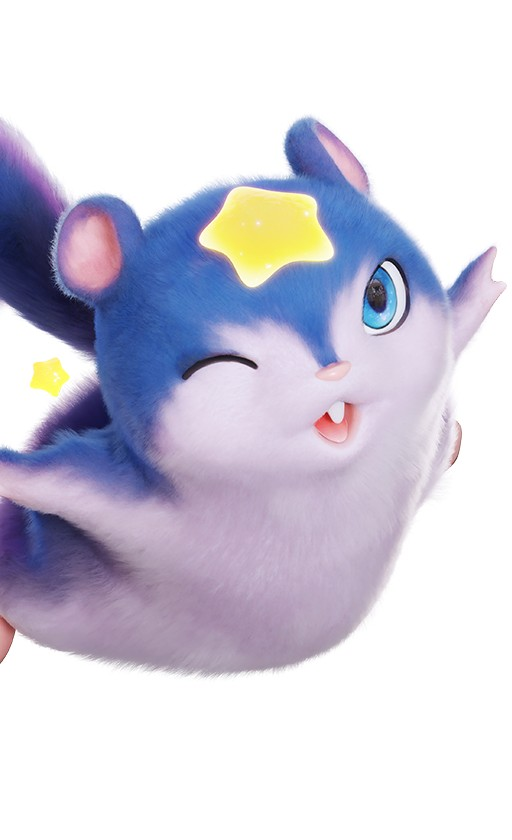
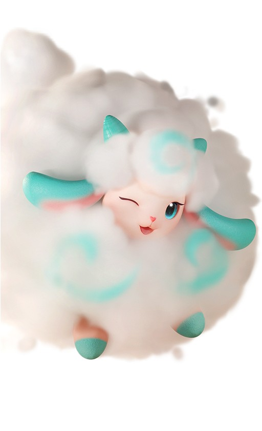
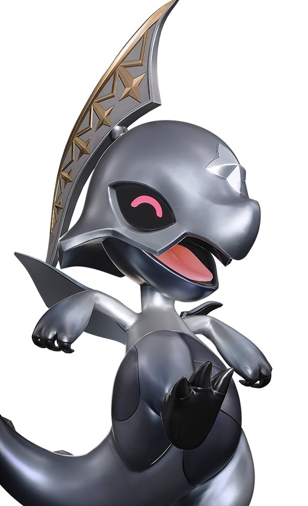
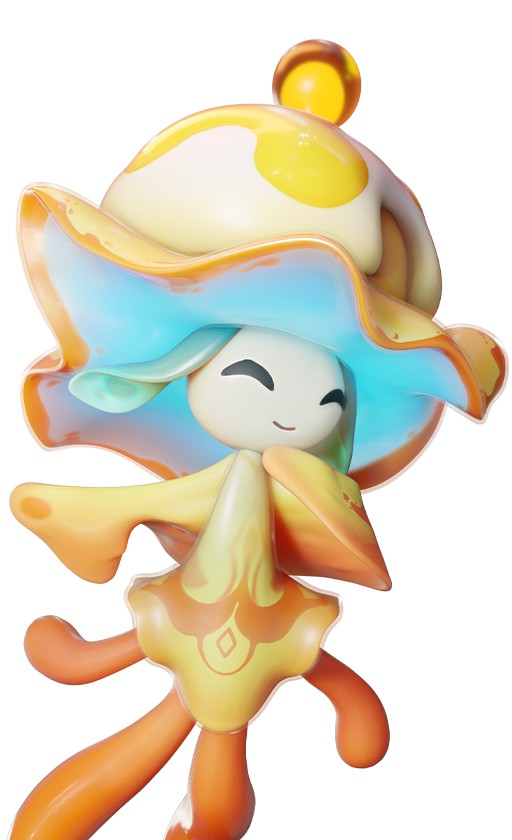

애니모 슈라라 그림 정답 4종, 데려가는 법부터 루카스 사진 퀘스트 구분까지
정답만 빠르게 확인하고 싶으실 분들을 위해 표부터 먼저 갈게요. 애니모 「이건 예술이야! 낙서가 아니라고」, 요즘 «슈라라 그림» 정답으로 많이 검색되는 그 퀘스트인데요, 한국어 자료가 마땅치 않아서 해외 공략까지 뒤져가며 맞춰봤어요. 다들 많이 막히는 «인식이 안 될 때»·«형태는 되는데 진화형은 안 되는» 지점, 2편으로 잘못 알려진 별개 퀘스트까지 이번에 깊게 파봤어요.
슈라라가 누구냐면
이 퀘스트 정식 명칭은 「이건 예술이야! 낙서가 아니라고」고, 그림 그리는 NPC 이름이 최근 «슈라라»로 확인됐네요. 시작 지점(영문 Horizon Square)🔍 한국어 명칭 미확인 근처 이젤 옆에 서 있는 슈라라가 러프 스케치를 보여주면서 «이거랑 똑같이 생긴 애니모를 데려와 달라»고 하는 4단계짜리 연작이에요.
정답부터 표로 정리하면
결론부터 말씀드리면 정답은 둔둔달·록볼볼·라라에그·싹크랩, 이 네 마리예요(2026년 9월 20일 기준). 표 열을 훨씬 상세하게 잡아봤어요.
| 단계 | 애니모 | 도감번호 | 원소 | 포지션 | 성장 단계 | 잡는 곳(레벨대) | 비고 |
|---|---|---|---|---|---|---|---|
| 1 | 둔둔달 | NO.052 | 물 | 격파 | 성숙기 | 고래첨벙 해안(LV.47~48) | 엘리트 별도 서식 |
| 2 | 록볼볼 | NO.058 | 땅 | 서포터 | 성장기 | 청석 대지(LV.48~50) | 설원 형태도 인정 |
| 3 | 라라에그 | NO.036 | 풀 | 격파 | 유년기 | 로즈타워 숲(LV.49~51) | 진화체는 불인정 |
| 4 | 싹크랩 | NO.023 | 땅·풀 | 격파 | 유년기 | 구름 초원 등 4곳(LV.41~58) | 구름 초원 최저 추천 |
잡았는데 인식이 안 될 때
포획해서 도감에 등록해두는 것만으론 부족해요. 아래 순서대로 하시면 됩니다.
- ① 포획 — 도감 등록만으론 안 열려요
- ② 잡은 애니모를 활성 파티에 편성
- ③ 슈라라 앞에서 소환해서 곁에 두기
- ④ 그 상태로 슈라라 앞까지 데려가기
- ⑤ 인식되면 대화 없이 자동 진행, 안 되면 몇 걸음 물러났다가 다시 접근
④는 «말을 걸어야 인식»이라는 설명과 «데려가기만 해도 자동 인식»이라는 설명이 갈려요.🔍 진술 갈림 일단 데려간 뒤 말을 한 번 걸어보시고, 반응이 없으면 잠깐 기다려보시는 걸 추천드려요. 그래도 안 되면 다들 «몇 걸음 물러났다가 다시 다가가기»를 써요. 동행 애니모가 플레이어를 따라오는 거리에 인식 판정이 걸려 있어서 그런 것 같아요.
형태는 되는데 진화형은 왜 안 될까요
결론부터 말씀드리면 «형태»는 상관없는데 «진화»는 안 돼요. 이 둘이 서로 다른 개념이라는 게 핵심이에요. «형태»는 서식지별 지역 변이를 말하는 건데, 실제로 록볼볼을 설원 지역 얼음 속성 형태로 잡아 인식된 사례가 있어요(국내 커뮤니티 실플레이 제보). 그러니 잡을 때 지역이나 색은 신경 쓰지 않아도 되고, 진짜 조심해야 할 건 다음에 나오는 «진화» 쪽이에요.

록볼볼이에요. 어느 지역 형태로 잡든 이 퀘스트 인식엔 상관없어요.
이미지 출처: 애니모 공식 위키 도감 wiki.aniimo.com
반면 «진화»는 완전히 다른 판정 기준이에요. 라라에그를 이미 붐테일자드나 썬더자드로 키워버렸다면 그 상위 개체는 도감에 있어도 인정이 안 되고, 유년기 라라에그를 처음부터 다시 한 마리 잡아야 해요(해외 공략 쪽에서 공통으로 확인된 내용이에요).

라라에그예요. 이 유년기 모습 그대로 잡아야 인정돼요.
이미지 출처: 애니모 공식 위키 도감 wiki.aniimo.com
정리하면 «어디서 잡았는지»는 자유롭지만 «어디까지 컸는지»는 정해져 있는 셈이라, 헷갈리면 애써 키운 애니모가 헛수고가 되는 거죠.
단계별로 어디서 잡나요
고래첨벙 해안 쪽에 가면 성숙기 둔둔달이 필드에 그냥 돌아다니고 있어요.

1단계 정답, 둔둔달이에요.
이미지 출처: 애니모 공식 위키 도감 wiki.aniimo.com
같은 지역 엘리트는 포획용이 아니라 보글달 진화 조건(39레벨+물결석)이니 헷갈리지 마세요. 록볼볼은 청석 대지에 성장기 형태로 서식 중인데, 여기 엘리트도 데굴굴→록볼볼 진화 조건(39레벨+패시브 [기묘한 암석]+대지석, 개수는 자료마다 갈려요)이라 포획과는 무관해요. 3단계 라라에그부터는 «형태»가 중요해지는 구간인데, 유년기 고정만 기억하면 로즈타워 숲에서 바로 잡으실 수 있어요. 마지막 싹크랩은 서식지가 네 곳이나 되는데, 레벨대로 정리하면 이래요.
- 구름 초원 LV.41~43 — 추천
- 늑대이빨 능선 LV.46~47
- 청석 대지 LV.48~50
- 바다끝 구릉 LV.50~58
넷 중 구름 초원이 레벨대가 제일 낮아서 실전엔 이쪽을 추천드려요.

4단계 정답, 싹크랩이에요.
이미지 출처: 애니모 공식 위키 도감 wiki.aniimo.com
잡기 전에 상성부터 체크하세요
넷 다 원소가 달라서, 약점 원소로 밀어붙이면 무력화가 훨씬 빨라져요.
| 애니모(원소) | 약점 1.6배 | 중립 1배 | 저항 0.625배 |
|---|---|---|---|
| 둔둔달(물) | 풀·전기·얼음 | 바람·빛 | 불·땅·물·어둠 |
| 록볼볼(땅) | 풀·물 | 바람·빛·어둠 | 불·전기·땅·얼음 |
| 라라에그(풀) | 불·바람·어둠 | 전기·빛·얼음 | 풀·땅·물 |
| 싹크랩(땅·풀) | 바람·어둠 | 풀·불·물·빛 | 전기·얼음(땅 0.391배) |
이 배율은 게임위드(GameWith) 기준값이라 인게임 실측과는 약간 다를 수 있는데, 표대로만 맞춰도 포획이 한결 편해진답니다.
보상은 이 정도예요
네 단계를 다 깨면 단계당 재화 30개(영문 Glimmer)씩 총 120개가 되네요. 그림도 단계별로 하나씩 딸려와요.
| 단계 | 애니모 | 그림 보상(영문 명칭) |
|---|---|---|
| 1 | 둔둔달 | Afternoon of the Blue Furball |
| 2 | 록볼볼 | Roar of the Bouldus |
| 3 | 라라에그 | Pointillist Hatching Melody |
| 4 | 싹크랩 | 자료마다 갈림 |
4단계 몫은 그림 유무가 자료마다 갈려서🔍 4단계 그림 유무 갈림, 재화 30개만큼은 확실히 챙긴다고 보시면 될 것 같아요.
2편이라고 알려진 건 사실 다른 퀘스트예요
사실 제가 얼마 전 「애니모 숨겨진 퀘스트 모음」에서 이걸 슈라라 2편이라고 소개했는데, 이번에 따로 파보니 그게 아니더라고요. 「Architecture and Models」는 슈라라의 후속편이 아니라 «루카스»라는 다른 사진작가 NPC의 별개 퀘스트예요. 같은 아스트라 안이라도 구역이 달라요.

루카스 퀘스트 정답 중 하나인 스타라미예요.
이미지 출처: 애니모 공식 위키 도감 wiki.aniimo.com
루카스가 있는 곳(영문 Astra Plaza)은 슈라라 이젤 자리랑 떨어져 있어서, «2편이겠거니» 찾아가면 못 만나실 수 있어요. 정답은 스타라미(NO.005·어둠)·뭉게양(NO.017·바람)·갸면뇽(NO.065·바람)·샹들라젤리(NO.079·전기) 넷이에요. 해외 공략 여러 곳이 같은 넷을 적고 있어서 믿을 만해요. 스타라미도 슈라라 쪽 둔둔달·록볼볼처럼 엘리트 개체가 따로 있는데, 이번 퀘스트엔 일반 개체만 데려가시면 충분해요.
| 정답 | 도감번호 | 원소 | 서식지 | 힌트 문구 | 약점 | 진화 레벨 |
|---|---|---|---|---|---|---|
| 스타라미 | NO.005 | 어둠 | 구름 초원·갈매기 만·고래첨벙 해안·스타폴 숲 | «이마에 금빛 별» | 바람·빛 | - |
| 뭉게양 | NO.017 | 바람 | 구름 초원·갈매기 만 | «솜사탕 같은» | 전기·빛 | 21레벨 |
| 갸면뇽 | NO.065 | 바람 | 붉은바위 고지 | «날카로운 눈빛» | 전기·빛 | 38레벨 |
| 샹들라젤리 | NO.079 | 전기 | 조화의 언덕🔍 레벨대 미확인 | «큰 모자를 쓴» | 땅·얼음 | 52레벨 |

뭉게양이에요.
이미지 출처: 애니모 공식 위키 도감 wiki.aniimo.com
힌트 문구·약점·진화 레벨은 표에 정리했는데, 힌트 문구가 그림 맞히기 쪽 표현이랑 톤이 비슷해서 착각하기 쉽죠. 스타라미는 네 곳에 나오고 갸면뇽·샹들라젤리는 한 곳뿐이라, 갈 수 있는 지역이 정해져 있어요. 진화 레벨도 슈라라 쪽 라라에그 유년기 주의처럼 미리 참고해두시는 게 좋아요.

갸면뇽이에요.
이미지 출처: 애니모 공식 위키 도감 wiki.aniimo.com
보상 구조도 슈라라랑 달라요. 그림 없이 재화만 나오는데, Glimmer 60·Safaris 300·복셀 코인 120·크레딧 40,000이 한 세트예요.

샹들라젤리예요. 넷 다 이름도 생김새도 슈라라 쪽 정답과는 완전히 달라요.
이미지 출처: 애니모 공식 위키 도감 wiki.aniimo.com
정답 제출 방식은 아직 확인된 자료가 없어요.🔍 제출 방식 미확인 슈라라처럼 데려가는 방식일 가능성은 있지만, 단정하진 않을게요.
헷갈리기 쉬운 것 두 가지
「내가 누구게」라는 기간 한정 이벤트(9.16~9.24 등)도 싹크랩을 다루는데, 사진 촬영 콘텐츠라 그림 맞히기랑은 전혀 다른 방식이에요. 엘리트 록볼볼도 이번 포획엔 필요 없지만, 데굴굴을 진화시키실 계획이면 그때는 필요하니 무관하다고 넘기지 마세요.
자주 묻는 질문
Q. 록볼볼 말고 다른 세 마리도 지역 형태(변이)로 잡으면 인정되나요?
확인된 사례는 록볼볼 설원 형태 하나뿐이에요. 형태·진화가 다른 개념이니 나머지 셋도 가능성은 높지만, 단정하긴 일러요.
Q. 이 퀘스트도 「내가 누구게」처럼 기간이 정해져 있나요?
아니요, 슈라라 쪽 퀘스트에 기간 제한이 있다는 자료는 없어서 상시 진행 가능한 걸로 보시면 될 것 같아요.
Q. 슈라라 퀘스트랑 루카스 퀘스트, 받는 재화가 겹치나요?
재화(Glimmer)는 둘 다 주는데 액수가 다르고, 루카스 쪽만 Safaris·복셀 코인·크레딧이 추가로 나와요.
Q. 루카스 퀘스트도 슈라라처럼 형태 상관없이 정답으로 인정되나요?
거기까지 확인해 준 자료는 아직 못 찾았어요. 확인되는 대로 이 글에 추가할게요.
Q. 여기 정리한 조건들, 나중에 패치되면 바뀌나요?
네, 아직 패치가 잦은 시기라 서식지나 진화 재료 개수 같은 세부값은 조정될 수 있어요. 큰 변경 있으면 다시 정리할게요.
슈라라 그림 맞히기 정리
정리하면 슈라라·루카스 두 퀘스트는 정답부터 완전히 별개예요. «형태는 자유, 진화는 불가»만 기억해두시면 그림 맞히기에서 헤매실 일은 크게 줄어들 거예요.
✔ 애니모 같이 보기 좋은 내용
· 애니모 전투 티어표 정리, 1티어 애니모 추천까지 짚어봤어요
· 애니모 캠핑카 생활 티어표 추천, 홈 능력 13종 정리
· 애니모 용어 총정리, 천휘 애니모 획득부터 희귀도 평가 차이부터 선천 후천 어빌리티, 옵시디언까지
참고한 곳
· 애니모 공식 위키 도감 - 둔둔달
· 애니모 공식 위키 도감 - 스타라미